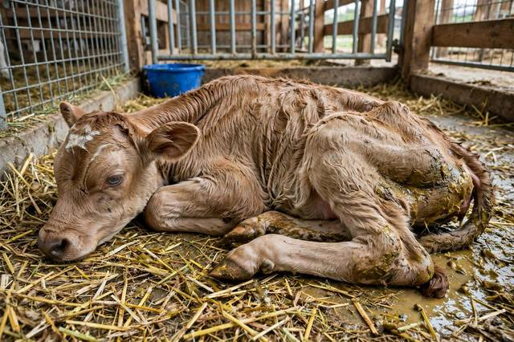
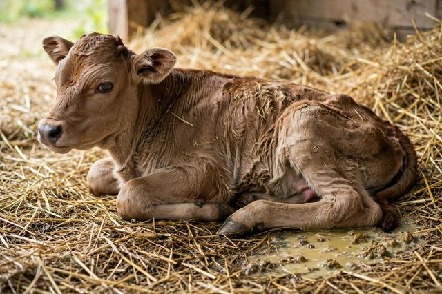
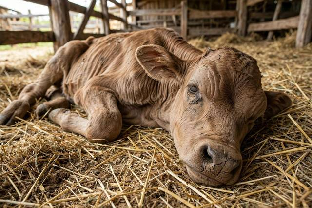

Calf diarrhea is a common syndrome in young calves and can be caused by infectious agents, feeding problems or management factors. Dehydration and electrolyte loss are major reasons calves become critically ill.
This guide covers clinical signs, causes, diagnosis, treatment principles and prevention.
Clinical Signs
1
Loose or watery faeces(Watery diarrhoea)
2
Dehydration(Loss of body fluids)
3
Sunken eyes(Eyes sunk into the sockets)
4
Weakness(Dull and lacking strength)
5
Reduced suckling(Drinks less milk than normal)
6
Cold extremities(Cold ears, legs and muzzle)
7
Inability to stand(Too weak to rise in severe cases)
8
Blood in faeces(Blood in the dung — a serious sign)
9
Fever(High body temperature)
10
Marked depression(Very dull and unresponsive)

Loose or watery faeces

Dehydration

Sunken eyesWeaknessReduced sucklingCold extremitiesInability to standBlood in faecesFeverMarked depression
Causes and Transmission
Causes include rotavirus, coronavirus, Cryptosporidium, enterotoxigenic E. coli, Salmonella and nutritional or hygiene problems. Risk is influenced by colostrum intake, cleanliness, stocking density and age.
Pathogenesis
Scours is usually caused by infectious agents — rotavirus, coronavirus, Cryptosporidium, E. coli and Salmonella — that damage the lining of the calf's intestine. The damaged gut cannot absorb water and nutrients properly, and fluid leaks into the bowel, producing watery diarrhoea.
Rapid loss of water and electrolytes causes dehydration, metabolic acidosis and weakness. If fluid losses are not replaced, the calf becomes recumbent, its circulation fails and it may die within a day or two. Failure to receive enough good-quality colostrum leaves the calf with little protection.
Veterinary Diagnosis
Assess hydration, suck reflex, temperature and age. Faecal testing can help identify pathogens during outbreaks. Consider septicemia and other causes in weak or febrile calves.
Differential Diagnosis
Several conditions can look similar. A veterinarian distinguishes them by the signs, history and laboratory findings:
Coccidiosis — causes bloody diarrhoea with straining, usually in older calves.
Salmonellosis — causes bloody diarrhoea with high fever, often in older calves.
Nutritional scours — follows milk-feeding errors; the calf usually stays bright with no fever.
Treatment and Case Management
Early oral electrolyte therapy is important for calves that can stand and swallow. Severely dehydrated, recumbent or non-suckling calves may need intravenous fluids and urgent veterinary care. Antibiotics are not routinely appropriate for uncomplicated viral or protozoal diarrhea and should be used only when bacterial infection or systemic illness is suspected by a veterinarian.
When to seek urgent help: A calf that cannot stand, cannot suck, has blood in faeces, is very cold or is severely dehydrated needs urgent veterinary attention.
Recommended Medicines
1
Fluid therapy – Oral electrolytes(Replaces fluids and salts lost in diarrhoea)As directed on the label / by the veterinarian
2
Fluid therapy – IV fluids(For severe dehydration in calves that cannot stand or suck)As prescribed by a veterinarian
3
Antibiotic – Oxytetracycline(Only when the veterinarian suspects bacterial infection or systemic illness)10–20 mg/kg IM or SC daily
4
NSAID – Meloxicam(For fever and pain, if the veterinarian advises)0.5 mg/kg IV/SC once
⚠ Important Tips:
Start oral electrolytes early for a calf that can stand and swallow.
Use antibiotics only when the veterinarian suspects bacterial infection — not for every case of diarrhoea.
Call the vet early if the calf cannot stand, cannot suck, or has blood in its faeces.
Keep the calf warm, dry and separated from healthy calves.
Oral medicine / drench — dose as the vet advisesIV fluid therapy — vet-administeredInjection — vet-administered only
Prevention and Herd Management
Ensure timely, adequate high-quality colostrum, clean calving pens, separate age groups, disinfect feeding equipment, isolate sick calves and maintain a consistent milk-feeding programme.
Frequently Asked Questions
What are the symptoms of calf diarrhea (scours)?
Loose or watery faeces, dehydration, sunken eyes, weakness, reduced suckling and cold extremities. In severe cases the calf cannot stand. Blood in the faeces, fever or marked depression may indicate serious disease.
What causes diarrhea in calves?
Causes include rotavirus, coronavirus, Cryptosporidium, enterotoxigenic E. coli, Salmonella and nutritional or hygiene problems. Risk is influenced by colostrum intake, cleanliness, stocking density and the calf's age.
How is calf diarrhea treated?
Early oral electrolyte therapy is important for calves that can stand and swallow. Severely dehydrated, recumbent or non-suckling calves may need intravenous fluids and urgent veterinary care. Antibiotics are not routinely appropriate for uncomplicated viral or protozoal diarrhea.
When is calf diarrhea an emergency?
A calf that cannot stand, cannot suck, has blood in its faeces, is very cold or is severely dehydrated needs urgent veterinary attention.
How can calf scours be prevented?
Ensure timely, adequate, high-quality colostrum, keep calving pens clean, separate age groups, disinfect feeding equipment, isolate sick calves and maintain a consistent milk-feeding programme.
How to treat calf scours at home?
Early oral electrolyte therapy is important for calves that can stand and swallow. Severely dehydrated, recumbent or non-suckling calves need intravenous fluids and urgent veterinary care, so call a veterinarian without delay.
What causes scours in calves?
Scours can be caused by rotavirus, coronavirus, Cryptosporidium, enterotoxigenic E. coli, Salmonella and feeding or hygiene problems. Poor colostrum intake, dirty pens and crowding increase the risk.
بچھڑے کو دست لگ جائیں تو کیا کریں؟
بچھڑے کو فوراً اورل الیکٹرولائٹ دیں اگر وہ کھڑا ہو کر پی سکتا ہے۔ شدید پانی کی کمی، کھڑا نہ ہونا یا خون والے دست خطرناک ہیں، ایسی صورت میں فوراً ویٹرنری ڈاکٹر کو بلائیں۔
Key Takeaway
Early recognition, accurate diagnosis, responsible veterinary care and herd-level prevention are central to managing this condition. Follow current local veterinary authority guidance and medicine labels.
Radostits, O.M., Gay, C.C., Hinchcliff, K.W., Constable, P.D. Veterinary Medicine: A Textbook of the Diseases of Cattle, Horses, Sheep, Pigs and Goats.
FAO animal health manuals. Food and Agriculture Organization of the United Nations.
✍️ Written by Dr. Shahid Bilal Depal, DVM (PVMC RVMP #15068)
This guide is for educational purposes. Consult a registered veterinarian for diagnosis and treatment.